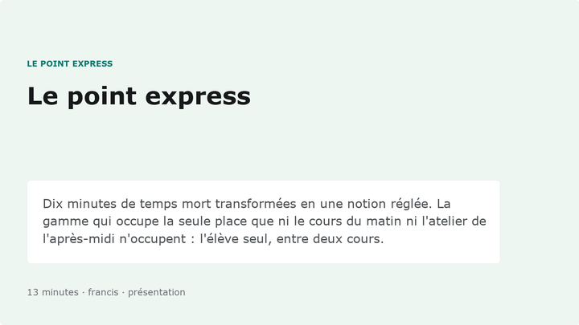
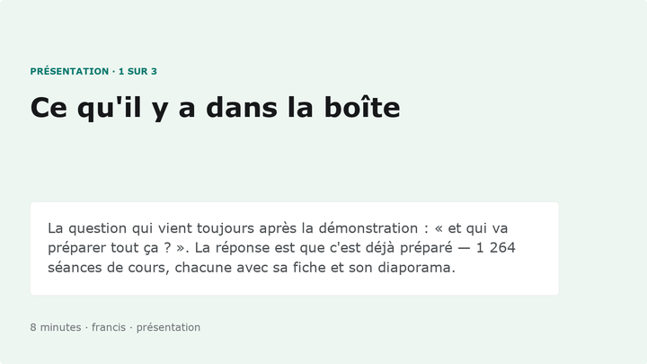
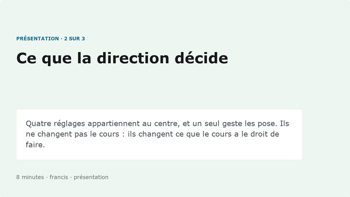
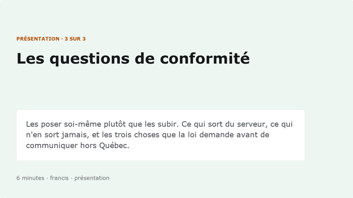
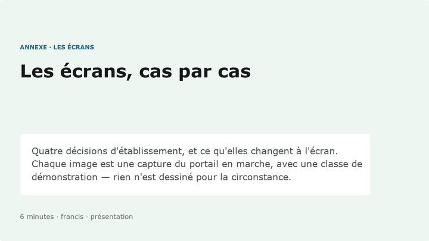
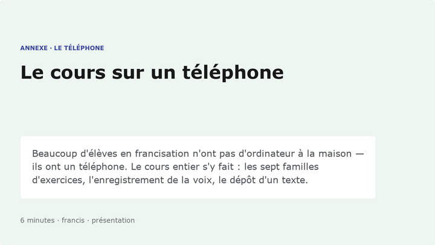
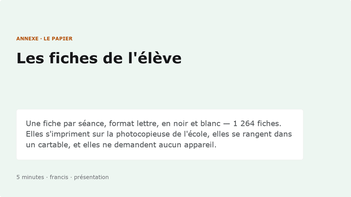
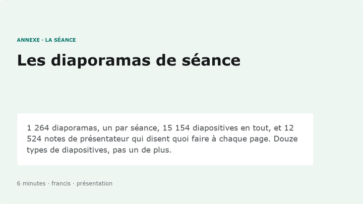
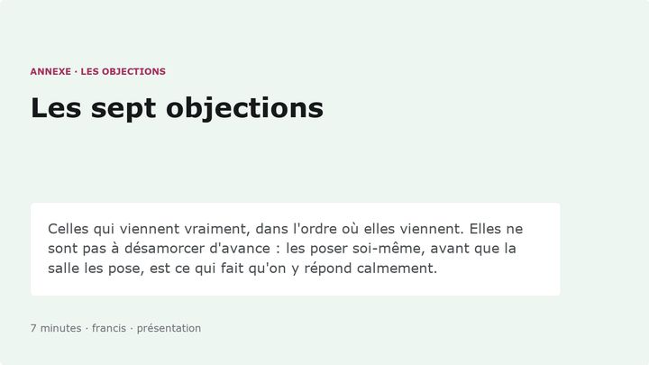

0-2 min
Le problème, pas le produit
Une classe de francisation, seize personnes, huit niveaux de français dans la même salle, et une enseignante qui photocopie la veille au soir. On ne parle pas encore d'outil.
Pour moi · Avant et pendant une rencontre
Tout ce qui s'ouvre pendant un pitch, dans l'ordre où on l'ouvre — plus les chiffres qu'il faut pouvoir dire sans les lire, les questions qui reviennent à chaque fois, et ce qu'il ne faut pas promettre. Une seule page à garder ouverte dans un onglet.
Chiffres comptés sur le dépôt le 30 août 2026 par
build/trousse.py. Cette page s'adresse à moi, pas au client.
Tout d'un coup d'œil
11 documents, et trois formes possibles pour chacun : la page qu'on ouvre dans un onglet, le diaporama qu'on projette, la feuille qu'on laisse sur la table. Un tiret veut dire que cette forme n'existe pas — pas qu'elle est ailleurs.
| Document | À l'écran | À projeter | Sur papier |
|---|---|---|---|
| Le déroulé de la rencontre Vingt minutes, sept temps, et la question par laquelle on finit. | la page | — | le PDF |
| Le point express La version courte, quand on a dix minutes dans un corridor. | la page | P4 | le PDF |
| Ce qu'il y a dans la boîte Le matériel, en chiffres et en structure. Le premier temps du pitch. | — | P1 | — |
| Ce que la direction décide Les quatre interrupteurs, et ce que chacun change à l'écran. | la page | P2 | — |
| Les questions de conformité Loi 25, hébergement, conservation — ce que le centre décide lui-même. | la page | P3 | — |
| Les écrans, cas par cas Treize captures du portail en marche, selon la décision prise. | la page | A1 | le PDF |
| Le cours sur un téléphone Les sept familles d'exercices, au doigt. Dix-huit captures. | la page | A2 | le PDF |
| Les fiches de l'élève Ce qu'on lui met dans les mains, sur papier. | la page | A3 | le PDF |
| Les diaporamas de séance Ce que l'enseignant projette en classe, bloc par bloc. | la page | A4 | le PDF |
| Les sept objections Celles qui viennent vraiment, et quoi répondre. | — | A5 | — |
| Le prix d'un module Le coût par élève, mesuré sur le registre des appels. | la page | — | — |
Ce tableau est relevé sur le disque, pas écrit à la main : une case ne s'affiche que si le fichier existe vraiment. Le jour où un diaporama est renommé, la case se vide au lieu de pointer dans le vide — on l'apprend en relançant le script, pas devant la salle.
À projeter
Deux familles. P, le pitch, dans l'ordre où on le projette — vingt minutes en tout. A, les annexes, qu'on ouvre seulement quand la salle demande à voir. Tous sortent du même système de design que les diaporamas de séance : c'est le produit qui se présente lui-même.

La version courte, quand on a dix minutes dans un corridor.

Le matériel, en chiffres et en structure. Le premier temps du pitch.

Les quatre interrupteurs, et ce que chacun change à l'écran.

Loi 25, hébergement, conservation — ce que le centre décide lui-même.

Treize captures du portail en marche, selon la décision prise.

Les sept familles d'exercices, au doigt. Dix-huit captures.

Ce qu'on lui met dans les mains, sur papier.

Ce que l'enseignant projette en classe, bloc par bloc.

Celles qui viennent vraiment, et quoi répondre.
Ils se refabriquent :
python3 build/powerpoints/pitch.py --vignettes recompte les chiffres,
réécrit les neuf fichiers et refait les images ci-dessus. Un diaporama de vente qui
annonce un chiffre périmé se retourne contre celui qui le projette.
Pour une formation plutôt qu'un pitch, le canevas Travailler avec Claude (29 écrans, animés, six temps) se projette directement dans le navigateur.
Vingt minutes
L'ordre compte plus que le contenu : on montre l'élève avant l'enseignant, et l'enseignant avant l'institution. Personne n'a jamais acheté un tableau de bord.
Une classe de francisation, seize personnes, huit niveaux de français dans la même salle, et une enseignante qui photocopie la veille au soir. On ne parle pas encore d'outil.
Ouvrir un module sur un téléphone — le vôtre, pas une capture. Puis leur faire sortir le leur : le code QR de la séance est sur la feuille, ils entrent sans compte et ils ont l'assistance. C'est le moment qui vend.
Le cours sur un téléphoneLe direct de la classe : quatorze élèves sur seize en ligne, question par question. Puis le dossier d'un élève. Dire tout de suite que les noms sont des pseudonymes.
Les écrans, cas par casLes chiffres du matériel — et surtout : une fiche par séance et un diaporama par séance, sortis du même fichier. C'est ce qui répond à « qui va préparer tout ça ? ».
Les fiches de l'élèveLes quatre interrupteurs, joués en direct : l'assistant, le micro, le dépôt de la voix, les séances sans compte. Laisser la direction choisir une combinaison et montrer ce qu'elle change.
Le bac à sable des cas de figureNe pas attendre qu'on les pose. Loi 25, hébergement, conservation, ce que le centre doit décider lui-même. Avoir le guide ouvert dans un onglet.
Guide pour la directionLe prix par élève et par module, puis une seule question : « qui essaie, et avec quel groupe ? ». Repartir avec un nom et une date, pas avec un accord de principe.
Le prix d'un moduleÀ dire sans lire
Trois suffisent pour une rencontre. Les autres sont là pour répondre, pas pour être récités.
Les trois à connaître par cœur : 87 modules de cours sur 8 niveaux, 1 518 heures de classe préparées, une fiche et un diaporama pour chacune des 1 264 séances. Le reste se retrouve sur cette page en deux secondes, et il vaut mieux chercher devant quelqu'un que réciter faux.
Elles reviennent toutes
C'est un réglage, pas une négociation. Le centre le pose une fois sur l'arbre des organisations et les 87 modules se replient : plus de rail d'outils, plus de correction avant l'envoi, la réponse attendue après deux essais. Les dialogues, les exercices, les mini-leçons ne bougent pas — ils ne dépendent d'aucun modèle. Le montrer plutôt que le dire : c'est la paire d'écrans 07 et 08 des captures.
Non, et il y a trois conditions — elles sont écrites dans le guide pour la direction. Dire aussi ce qui n'est jamais gardé : les corrections de l'assistant s'affichent et ne s'écrivent nulle part, et le registre des appels compte des jetons sans jamais garder un texte.
Pas nécessairement. Le mode séance ouvre une classe avec une feuille photocopiée et un code de six caractères : aucun compte, aucun pseudonyme, aucune donnée identifiante — et l'enseignant a quand même son tableau, participant par participant.
Le coût réel par élève et par module est dans « Le prix d'un module », avec la part qui vient des appels aux modèles. Un centre qui ferme l'assistant ne paie plus rien à l'usage : les voix sont enregistrées d'avance et les exercices se corrigent sur l'appareil.
Non, et le matériel le prouve mieux qu'un discours : 1 264 diaporamas de séance avec 12 524 notes de présentateur, c'est-à-dire 1 518 heures de classe à donner. L'outil prépare, il ne fait pas le cours.
Nous. Chaque module part du programme d'études, avec sa situation de vie, ses intentions de communication et ses savoirs — rien n'est recopié d'un manuel. C'est ce qui permet d'y toucher : un module qui ne convient pas se réécrit.
Ils ont un téléphone, et c'est le cas d'usage principal, pas une adaptation : barre d'outils en bas de l'écran, banc de réponses sous le pouce, glisser-déposer au doigt. Aucune application à installer, aucun compte d'App Store.
Honnêteté
Une limite dite par soi-même est un argument ; découverte par l'autre, c'est un problème.
La veille
Le moment qui vend
Douze personnes qui regardent une démonstration se souviennent d'une démonstration. Douze personnes qui font l'exercice se souviennent de l'exercice. Le mode séance est fait pour ça : une feuille photocopiée, un code QR, et personne n'a de compte à créer.
| Quand | Le geste |
|---|---|
| La veille | Dans le portail, onglet Élèves → « Séance sans compte » : choisir un groupe de démonstration et un module court. Le serveur rend un code de six caractères. |
| La veille | Ouvrir la feuille et l'imprimer — code QR, code en gros, adresse en toutes lettres, noir et blanc. En apporter une dizaine, ou une seule à projeter. |
| Pendant | « Sortez votre téléphone, visez le carré. » Ils entrent en deux secondes, sans compte et sans nom. |
| Après | Projeter le direct de la classe : leurs réponses arrivent, question par question, sous « Participant 1 » à « Participant N ». |
Ils auront l'assistance — traduire, simplifier, demander, « Corrige-moi ! » — parce qu'une séance hérite des réglages de son centre, et que l'assistance est autorisée par défaut. C'est justement ce qu'il faut leur faire toucher : la salle essaie exactement ce que la direction s'apprête à autoriser ou non.
Deux bornes à connaître : la séance expire le soir même et accepte 40 appareils. Pour une rencontre, c'est large ; pour une journée portes ouvertes, en ouvrir une par demi-journée.
Vous avez déjà le code ? Ouvrez la feuille directement : feuille-seance.html?code=XXXXXX — remplacez les six X. La feuille se fabrique côté serveur, code QR compris : aucun service tiers ne voit l'adresse de votre classe.